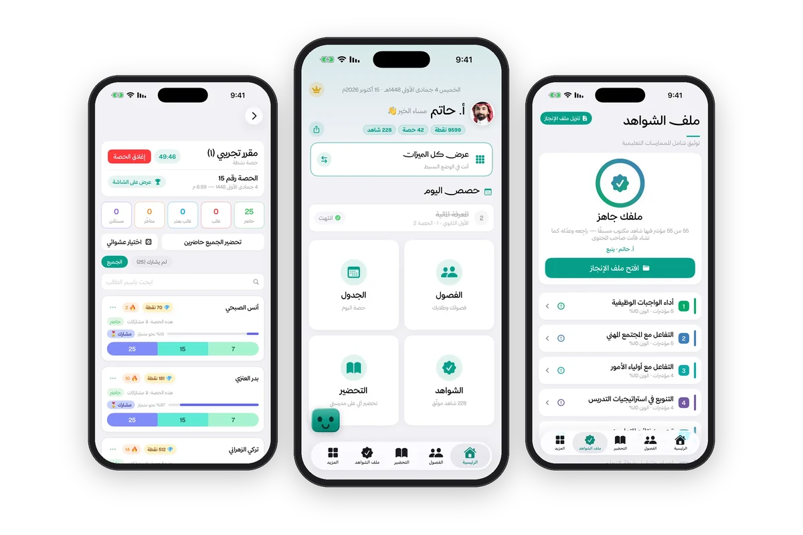

المؤسّس ومطوّر المنتج · منذ 2026
شواهد المعلم
أسّست وطوّرت «شواهد المعلم»، تطبيق آيفون عربي يساعد المعلّمين في المملكة على إدارة فصولهم وإعداد ملف الشواهد وفق معايير الأداء الوظيفي.
- 11 معيارًا للأداء
- 55 مؤشرًا
متاح الآن على App Store للآيفون.
عن تصميم المنتج وتطويره
- الحاجة
- إدارة الفصول وتنظيم شواهد الأداء في سياق التعليم السعودي، في تطبيق واحد على جوال المعلّم.
- ما بنيته
- نقل الفصول والطلاب من منصة مدرستي أو ملف نور، ورصد الحضور بضغطة مع نقاط المشاركة ومؤقت الحصة، وتحضير الدروس الأسبوعي، وتقارير المقررات بصيغتي PDF وExcel، ولوحات المتصدرين والشهادات للطلاب، و228 نموذج شاهد مع ملف إنجاز مطبوع يربط كل معيار بشواهده عبر الباركود، ومساعدًا ذكيًا يجيب من بيانات المعلّم نفسه.
- دوري
- تولّيت المنتج والتصميم والتطوير كاملًا، من تجربة المستخدم إلى التنفيذ باستخدام SwiftUI وNext.js وSupabase.
